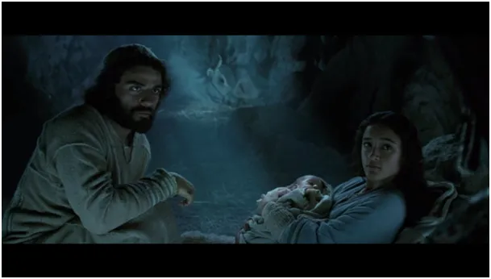
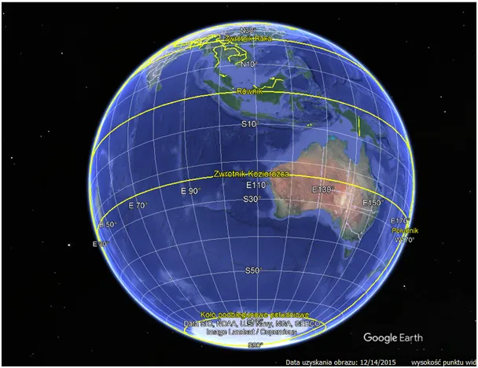
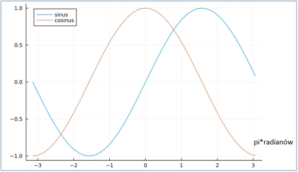

Boże Narodzenie to święto wyłącznie chrześcijańskie.
Z okazji świąt chrześcijańskich pojawia się mnóstwo głosów o tym, jak to chrześcijanie "ukradli" pradawne święta, które ludzie obchodzili z okazji doniosłych zjawisk astronomicznych. Sprawa jest od początku postawiona na głowie, bo chrześcijaństwo stare święta najzwyklej porzuciło lub jak ktoś woli zbagatelizowało.

Przyjęty przez ochrzczonych Greków od Żydów monoteizm najzwyklej porzucił całe plejady olimpijskich bóstw. Nauka Chrystusa do znudzenia powtarza, że "moje królestwo nie jest z tego świata", czym zamyka raz na zawsze źródła świętości w naszej rzeczywistości. Ani Słońce ani żaden meteoryt nie ma w sobie nic nadzwyczajnego. Bóg jest Twórcą wszystkiego, co znamy i jest na zewnątrz tego stworzenia, nie ma mowy o żadnym mieszaniu się sacrum i profanum. W Apokalipsie czytamy wyraźnie, że obecny świat jak hologram zniknie, tak jakby go nigdy nie było, zniknie tak, że nie pozostanie po nim żaden ślad, nawet pyłek nie przetrwa, czas dobiegnie końca. Na nowej Ziemi pojęcie "świętych obcowanie" będzie nadal obowiązywać, dlatego możemy przypuszczać, że czas jak go odczuwamy teraz nadal będzie istniał.

Dwie doby temu, 22 grudnia w nocy o 4:27 Słońce zawisło prostopadle nad zwrotnikiem Koziorożca nad Pacyfikiem w pobliżu Australii i od tego momentu spiralnym ruchem wraca na północ globusa. W ścisłym sensie nad zwrotnikiem świeciło prostopadle przez ułamek sekundy i tylko w jednym punkcie, zwrotnik to granica a nie linia prostopadłej projekcji Słońca. Każdego roku tylko jeden punkt na zwrotniku przez ułamek sekundy doświadcza takiej relacji. Za rok będzie to godz. 10:20 21 grudnia, czyli będzie to punkt w okolicach Madagaskaru.

Kosinusoida (brązowa) jest w swych ekstremach leniwa, w grudniu i czerwcu trudno zauważyć zmianę długości dnia, ale w marcu i wrześniu dobowe zmiany są bardzo duże. Szybkość zmian pokazuje jej pochodna sinusoida. Jak widzimy na początku swego okresu ta szybkość jest równa zero, to był ten moment, gdy Słońce zawisło prostopadle nad zwrotnikiem. Od tej chwili szybkość zmian każdego dnia rośnie, aby osiągnąć swe extremum w marcu, co przyniesie sztormy i powiew wiosny.
Paweł Klimczewski